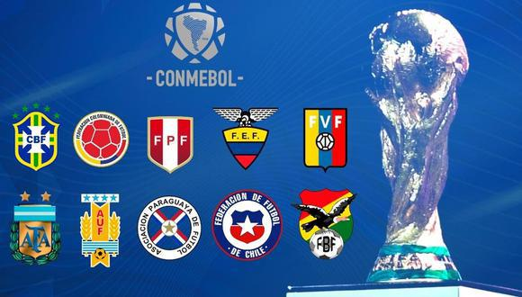

COPAS QUE JÁ PARTICIPOU:
A Conmebol - zona sul-americana das eliminatórias para a Copa do Mundo FIFA de 2022 foi disputada pelas dez seleções afiliadas competindo por quatro vagas diretas e mais uma na repescagem. 4 Já foram selecionadas nas Eliminatórias da Copa Do Mundo Qatar 2022 faltando apenas o Peru. A repescagem intercontinental foi determinada em sorteio pela FIFA no dia 26 de novembro de 2021. O Peru | quinto colocado da Conmebol irá enfrentar o vencedor da quarta fase. A Repescagem está marcada para ser disputada em jogo único e em campo neutro no dia 13 ou 14 de junho de 2022.
